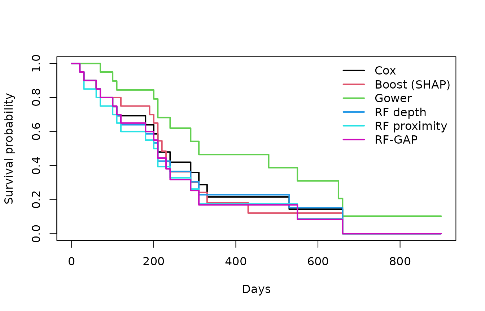

Comparing the Approaches
Dr. Simon Müller
2026-11-24
Source:vignettes/comparing_approaches.rmd
comparing_approaches.rmdThe Methods vignette defines the distances of this package. Here we apply all of them to the same problem and look at the differences in practice: which cases they retrieve, why, how well the retrieved cases predict, and how the distances react to irrelevant features and to changes in the data.
Data and models
We use the survival of 213 patients with advanced lung cancer
(survival::lung). The features are age, sex, two
performance scores (ECOG, 0 = fully active, and Karnofsky, 100 = no
complaints) and the weight loss in the last six months. 160 patients
form the case base, the other 53 are new patients (queries).
lung2 <- na.omit(lung[, c("time", "status", "age", "sex", "ph.ecog", "ph.karno", "wt.loss")])
lung2$status <- lung2$status - 1
lung2$sex <- factor(lung2$sex, labels = c("male", "female"))
features <- c("age", "sex", "ph.ecog", "ph.karno", "wt.loss")
set.seed(2024)
idx <- sample(nrow(lung2), 160)
train <- lung2[idx, ]
test <- lung2[-idx, ]We build six distances:
- a Cox model with a spline for age;
- gradient boosting (
BoostModel, xgboost with the Cox objective) with the SHAP distance; - the Gower distance;
- a random forest with three distance methods.
The models other than Cox use the features as they are.
fml <- Surv(time, status) ~ age + sex + ph.ecog + ph.karno + wt.loss
fit_all <- function(train, seed = 1) {
cox <- CoxModel$new(Surv(time, status) ~ rcs(age, 3) + sex + ph.ecog + ph.karno + wt.loss, train)
cox$fit()
boost <- BoostModel$new(fml, train, nrounds = 100, params = list(eta = 0.05, max_depth = 2))
boost$fit()
gower <- GowerModel$new(fml, train)
gower$fit()
set.seed(seed)
rf <- RFModel$new(fml, train, num.trees = 300)
rf$fit()
# three distances from the same forest
rf_prox <- rf$clone()$set_distance_method("Proximity")
rf_gap <- rf$clone()$set_distance_method("Proximity", proximity_type = "rfgap")
list("Cox" = cox, "Boost (SHAP)" = boost, "Gower" = gower, "RF depth" = rf,
"RF proximity" = rf_prox, "RF-GAP" = rf_gap)
}
models <- fit_all(train)Which cases are retrieved?
Take the first new patient:
query <- test[1, ]
knitr::kable(query)| time | status | age | sex | ph.ecog | ph.karno | wt.loss | |
|---|---|---|---|---|---|---|---|
| 8 | 361 | 1 | 71 | female | 2 | 60 | 1 |
The five most similar cases for each distance:
neighbours <- function(model, query, k) {
d <- model$calc_distance_matrix(query)
apply(d, 2, order)[seq_len(k), , drop = FALSE]
}
show <- lapply(names(models), function(m) {
nn <- neighbours(models[[m]], query, k = 5)[, 1]
cbind(method = m, train[nn, c(features, "time", "status")])
})
knitr::kable(do.call(rbind, show), row.names = FALSE)| method | age | sex | ph.ecog | ph.karno | wt.loss | time | status |
|---|---|---|---|---|---|---|---|
| Cox | 70 | female | 2 | 70 | 3 | 211 | 0 |
| Cox | 76 | female | 2 | 60 | -24 | 95 | 1 |
| Cox | 50 | female | 2 | 60 | -3 | 239 | 1 |
| Cox | 67 | female | 2 | 70 | 2 | 208 | 1 |
| Cox | 68 | female | 2 | 70 | 10 | 310 | 1 |
| Boost (SHAP) | 70 | female | 2 | 70 | 3 | 211 | 0 |
| Boost (SHAP) | 67 | female | 2 | 70 | 2 | 208 | 1 |
| Boost (SHAP) | 68 | female | 2 | 70 | 10 | 310 | 1 |
| Boost (SHAP) | 60 | female | 2 | 70 | 10 | 199 | 1 |
| Boost (SHAP) | 50 | female | 2 | 60 | -3 | 239 | 1 |
| Gower | 70 | female | 2 | 70 | 3 | 211 | 0 |
| Gower | 67 | female | 2 | 70 | 2 | 208 | 1 |
| Gower | 68 | female | 2 | 70 | 10 | 310 | 1 |
| Gower | 76 | female | 2 | 60 | -24 | 95 | 1 |
| Gower | 72 | female | 2 | 70 | 20 | 285 | 1 |
| RF depth | 70 | female | 2 | 70 | 3 | 211 | 0 |
| RF depth | 67 | female | 2 | 70 | 2 | 208 | 1 |
| RF depth | 68 | female | 2 | 70 | 10 | 310 | 1 |
| RF depth | 50 | female | 2 | 60 | -3 | 239 | 1 |
| RF depth | 72 | female | 2 | 70 | 20 | 285 | 1 |
| RF proximity | 70 | female | 2 | 70 | 3 | 211 | 0 |
| RF proximity | 67 | female | 2 | 70 | 2 | 208 | 1 |
| RF proximity | 68 | female | 2 | 70 | 10 | 310 | 1 |
| RF proximity | 50 | female | 2 | 60 | -3 | 239 | 1 |
| RF proximity | 76 | female | 2 | 60 | -24 | 95 | 1 |
| RF-GAP | 70 | female | 2 | 70 | 3 | 211 | 0 |
| RF-GAP | 67 | female | 2 | 70 | 2 | 208 | 1 |
| RF-GAP | 68 | female | 2 | 70 | 10 | 310 | 1 |
| RF-GAP | 70 | male | 3 | 60 | 20 | 118 | 1 |
| RF-GAP | 50 | female | 2 | 60 | -3 | 239 | 1 |
For this patient, all distances find women with the same ECOG score and a similar age; the nearest case is the same for all of them. Further down the lists, they disagree.
How similar are the neighbourhoods in general? For every new patient we take the 10 nearest cases of each distance and compute the overlap of two neighbourhoods, (Jaccard), averaged over the new patients:
k <- 10
nn_all <- lapply(models, neighbours, query = test, k = k)
jaccard <- function(a, b) mean(vapply(seq_len(ncol(a)), function(q) {
length(intersect(a[, q], b[, q])) / length(union(a[, q], b[, q]))
}, numeric(1)))
overlap <- outer(names(nn_all), names(nn_all),
Vectorize(function(a, b) jaccard(nn_all[[a]], nn_all[[b]])))
dimnames(overlap) <- list(names(nn_all), names(nn_all))
knitr::kable(overlap, digits = 2)| Cox | Boost (SHAP) | Gower | RF depth | RF proximity | RF-GAP | |
|---|---|---|---|---|---|---|
| Cox | 1.00 | 0.33 | 0.70 | 0.42 | 0.38 | 0.34 |
| Boost (SHAP) | 0.33 | 1.00 | 0.33 | 0.36 | 0.33 | 0.32 |
| Gower | 0.70 | 0.33 | 1.00 | 0.48 | 0.44 | 0.41 |
| RF depth | 0.42 | 0.36 | 0.48 | 1.00 | 0.71 | 0.65 |
| RF proximity | 0.38 | 0.33 | 0.44 | 0.71 | 1.00 | 0.82 |
| RF-GAP | 0.34 | 0.32 | 0.41 | 0.65 | 0.82 | 1.00 |
There are two families. The Cox and the Gower distance, both sums of per-feature differences, share most of their neighbours; the three forest distances share most of theirs. Between the families, only about four in ten neighbours are the same. The SHAP distance of the boosted model forms a group of its own: only a third of its neighbours are also retrieved by any other distance. The choice of the distance changes the retrieved cases considerably, even when, as we will see, it hardly changes the quality of the predictions.
Why are cases similar?
explain_match() explains a match for every distance, but
each in its own terms: the Cox model in contributions to the log hazard,
the boosted model in SHAP values (also contributions to the log hazard),
the Gower distance in per-feature differences, the forest in split
variables at which the paths of the cases diverge.
nn1 <- function(m) train[nn_all[[m]][1, 1], ]
knitr::kable(models$Cox$explain_match(query, nn1("Cox")), digits = 3)| term | query_contribution | case_contribution | distance | share |
|---|---|---|---|---|
| ph.karno | 1.358 | 1.584 | 0.226 | 0.842 |
| rcs(age, 3) | 0.491 | 0.461 | 0.030 | 0.113 |
| wt.loss | -0.006 | -0.018 | 0.012 | 0.045 |
| sex | -0.612 | -0.612 | 0.000 | 0.000 |
| ph.ecog | 1.858 | 1.858 | 0.000 | 0.000 |
knitr::kable(models$`Boost (SHAP)`$explain_match(query, nn1("Boost (SHAP)")), digits = 3)| term | query_contribution | case_contribution | distance | share |
|---|---|---|---|---|
| age | 0.186 | 0.054 | 0.132 | 0.680 |
| sex | -0.323 | -0.344 | 0.021 | 0.107 |
| wt.loss | 0.162 | 0.182 | 0.021 | 0.107 |
| ph.karno | 0.007 | 0.019 | 0.012 | 0.062 |
| ph.ecog | 0.626 | 0.634 | 0.009 | 0.044 |
knitr::kable(models$Gower$explain_match(query, nn1("Gower")), digits = 3)| variable | query_value | case_value | weight | distance | share |
|---|---|---|---|---|---|
| ph.karno | 60 | 70 | 1 | 0.040 | 0.816 |
| age | 71 | 70 | 1 | 0.005 | 0.095 |
| wt.loss | 1 | 3 | 1 | 0.004 | 0.089 |
| sex | female | female | 1 | 0.000 | 0.000 |
| ph.ecog | 2 | 2 | 1 | 0.000 | 0.000 |
knitr::kable(models$`RF depth`$explain_match(query, nn1("RF depth")), digits = 3)| variable | n_trees | share |
|---|---|---|
| ph.karno | 57 | 0.518 |
| wt.loss | 45 | 0.409 |
| age | 8 | 0.073 |
| sex | 0 | 0.000 |
| ph.ecog | 0 | 0.000 |
The nearest case agrees with the query in sex and ECOG, so the explanations attribute the remaining distance to the Karnofsky score, age and weight loss. The SHAP explanation shows a property of trees: the SHAP value of a feature is a step function, so the one-year age difference (71 vs. 70) counts more than the Karnofsky difference, because a split of the trees lies between 70 and 71. The SHAP values of sex and ECOG also differ slightly although the cases agree in them: in trees, the contribution of a feature depends on the other features (interactions).
What does each distance pay attention to in general? We change one feature of a case from its lower to its upper quartile (for sex: from male to female), keep the other features, and measure the distance between the two versions. Relative to the sum over the features, this is the weight each distance gives to a typical difference in a feature:
iqr_change <- function(data, f, lower) {
v <- data[[f]]
data[[f]] <- if (is.factor(v)) {
factor(levels(v)[if (lower) 1 else 2], levels(v))
} else {
unname(quantile(v, if (lower) 0.25 else 0.75, type = 1))
}
data
}
feature_weights <- function(models, data, features) {
rf <- models$`RF depth`$model_fit
w <- sapply(features, function(f) {
lo <- iqr_change(data, f, TRUE)
hi <- iqr_change(data, f, FALSE)
boost <- models$`Boost (SHAP)`
c("Cox" = sum(models$Cox$explain_match(lo[1, ], hi[1, ])$distance),
# the SHAP values depend on the other features: average over all cases
"Boost (SHAP)" = mean(rowSums(abs(boost$shap_values(lo) - boost$shap_values(hi)))),
"Gower" = sum(models$Gower$explain_match(lo[1, ], hi[1, ])$distance),
# the forest distance depends on the other features: average over all cases
"RF depth" = mean(diag(depth_distance(lo[, features], hi[, features], rf))) / rf$num.trees)
})
w / rowSums(w)
}
knitr::kable(feature_weights(models, train, features), digits = 2)| age | sex | ph.ecog | ph.karno | wt.loss | |
|---|---|---|---|---|---|
| Cox | 0.10 | 0.30 | 0.45 | 0.11 | 0.05 |
| Boost (SHAP) | 0.13 | 0.36 | 0.34 | 0.01 | 0.16 |
| Gower | 0.14 | 0.50 | 0.17 | 0.10 | 0.09 |
| RF depth | 0.27 | 0.20 | 0.17 | 0.13 | 0.23 |
The distances weight the features very differently:
- The Cox distance follows the estimated effects: ECOG and sex, the strongest prognostic factors in these data, dominate.
- The SHAP distance of the boosted model also follows the effects the model has learned. Sex and ECOG dominate, as for the Cox model, but the Karnofsky score gets almost no weight: once ECOG is in the model, the trees do not need the correlated Karnofsky score.
- The Gower distance follows the scale of the features: sex is binary, so male vs. female is the largest possible difference (1); a typical difference in age or weight loss is a small part of the range.
- The forest spreads its weight more evenly and gives the continuous features (age, weight loss) the most weight. Trees split more often on features with many possible split points (Strobl et al., 2007), and every split adds edges to the depth distance.
How well do the retrieved cases predict?
Each distance predicts the survival curve of a new patient by the Kaplan–Meier estimate of the 20 nearest cases. For the first patient:
times <- seq(0, 900, by = 10)
curves <- sapply(models, function(m) m$predict_survival(query, k = 20, times = times)[1, ])
matplot(times, curves, type = "s", lty = 1, lwd = 2, col = 1:6,
xlab = "Days", ylab = "Survival probability", ylim = c(0, 1))
legend("topright", names(models), col = 1:6, lty = 1, lwd = 2, bty = "n")
On all new patients, scored with Uno’s C-index (higher is better) and the integrated Brier score (IBS, lower is better):
scores <- t(sapply(models, function(m) {
ev <- m$evaluate_survival(test, k = 20)
c(c_index = ev$c_index, ibs = ev$ibs)
}))
knitr::kable(scores, digits = 3)| c_index | ibs | |
|---|---|---|
| Cox | 0.608 | 0.207 |
| Boost (SHAP) | 0.614 | 0.208 |
| Gower | 0.610 | 0.195 |
| RF depth | 0.604 | 0.213 |
| RF proximity | 0.620 | 0.213 |
| RF-GAP | 0.578 | 0.217 |
The differences are small, as in the benchmark article, and with 53 test patients well within the noise. Predictive performance is rarely the reason to prefer one distance; their behaviour and interpretation are.
Irrelevant features
In practice, not every feature in the data is relevant. We add five features of pure noise and refit all models.
add_noise <- function(df) {
noise <- as.data.frame(matrix(rnorm(nrow(df) * 5), ncol = 5,
dimnames = list(NULL, paste0("noise", 1:5))))
cbind(df, noise)
}
set.seed(7)
train_n <- add_noise(train)
test_n <- add_noise(test)
fml_n <- update(fml, ~ . + noise1 + noise2 + noise3 + noise4 + noise5)
cox_n <- CoxModel$new(update(Surv(time, status) ~ rcs(age, 3) + sex + ph.ecog + ph.karno + wt.loss,
~ . + noise1 + noise2 + noise3 + noise4 + noise5), train_n)
cox_n$fit()
gower_n <- GowerModel$new(fml_n, train_n)
gower_n$fit()
set.seed(1)
rf_n <- RFModel$new(fml_n, train_n, num.trees = 300)
rf_n$fit()
boost_n <- BoostModel$new(fml_n, train_n, nrounds = 100, params = list(eta = 0.05, max_depth = 2))
boost_n$fit()
models_n <- list("Cox" = cox_n, "Boost (SHAP)" = boost_n, "Gower" = gower_n, "RF depth" = rf_n)How much weight do the noise features get, how much do the neighbourhoods change, and how do the predictions change?
w_noise <- feature_weights(models_n, train_n, c(features, paste0("noise", 1:5)))
noise_tbl <- data.frame(
method = names(models_n),
noise_weight = rowSums(w_noise[, paste0("noise", 1:5)]),
overlap_with_clean = vapply(names(models_n), function(m) {
jaccard(nn_all[[m]], neighbours(models_n[[m]], test_n, k = k))
}, numeric(1)),
c_index = vapply(models_n, function(m) m$evaluate_survival(test_n, k = 20)$c_index, numeric(1)),
c_index_clean = scores[names(models_n), "c_index"]
)
knitr::kable(noise_tbl, digits = 2, row.names = FALSE)| method | noise_weight | overlap_with_clean | c_index | c_index_clean |
|---|---|---|---|---|
| Cox | 0.26 | 0.51 | 0.54 | 0.61 |
| Boost (SHAP) | 0.42 | 0.22 | 0.62 | 0.61 |
| Gower | 0.41 | 0.37 | 0.56 | 0.61 |
| RF depth | 0.58 | 0.31 | 0.58 | 0.60 |
- The Cox model estimates small, but not zero, coefficients for the noise features: with 160 cases, chance associations remain. About a quarter of its distance is noise.
- The SHAP distance gives the noise about 40% of its weight, and its neighbourhoods change the most. With 160 cases and 100 fixed rounds, the boosted trees find splits in the noise; the SHAP values reflect the fitted model, including its overfitting. Its C-index did not drop, but on 53 test patients this may be chance. Choose the number of rounds and the depth by cross-validation (see Methods); on data this small, the weights of the noise features remain unstable even then.
- The Gower distance weights the noise like the real features: it gets the share that five of ten features get by their scale.
- The forest gives the noise the most weight: on a
small data set, the trees find many splits in continuous noise that look
useful. Larger leaves (
min.node.size) do not change this much. Its neighbourhoods change the most.
All distances predict worse with noise. The C-index on 53 test
patients is too noisy to rank the distances; the weights and overlaps
show the mechanism. On larger data sets the coefficients of the noise
features shrink towards zero, and the regression distance loses its
noise; see the benchmark article for the Pima data with 532 cases. With
many candidate features, select the features before building the
distance (e.g. with CoxModel$variable_selection()).
Stability
A distance learned from data changes when the data change. We refit each distance on five random subsamples of 90% of the case base and check how stable the 10 nearest cases of the new patients are (overlap of the neighbourhoods of two subsamples, restricted to cases in both).
set.seed(3)
subsamples <- replicate(5, sort(sample(nrow(train), 144)), simplify = FALSE)
nn_sub <- lapply(seq_along(subsamples), function(s) {
tr <- train[subsamples[[s]], ]
ms <- fit_all(tr, seed = s)
lapply(ms, function(m) {
nn <- neighbours(m, test, k = nrow(tr))
matrix(rownames(tr)[nn], nrow = nrow(tr))
})
})
common <- Reduce(intersect, lapply(subsamples, function(s) rownames(train)[s]))
top_common <- function(nn) apply(nn, 2, function(x) x[x %in% common][seq_len(k)])
stability <- vapply(names(models), function(m) {
tops <- lapply(nn_sub, function(x) top_common(x[[m]]))
pairs <- combn(length(tops), 2)
mean(apply(pairs, 2, function(p) jaccard(tops[[p[1]]], tops[[p[2]]])))
}, numeric(1))
knitr::kable(data.frame(method = names(stability), stability = stability),
digits = 2, row.names = FALSE)| method | stability |
|---|---|
| Cox | 0.72 |
| Boost (SHAP) | 0.45 |
| Gower | 0.98 |
| RF depth | 0.75 |
| RF proximity | 0.78 |
| RF-GAP | 0.74 |
The Gower distance changes only through the ranges of the features
and is the most stable. The Cox distance changes with the estimated
coefficients; the forest distances change with the forest, and also with
the random seed. The SHAP distance is the least stable: boosting builds
its trees greedily one after another, and small changes in the data
change which splits are chosen, so the step functions of the SHAP values
move. Stronger regularisation (smaller eta with more
rounds, larger min_child_weight, lambda) may
help; we did not tune it.
Summary
| Cox (regression) | Boosting (SHAP) | Random forest | Gower | |
|---|---|---|---|---|
| Weights the features by | estimated effects | learned effects | number of splits (favours continuous features) | scale (favours binary features) |
| Explanation | contribution to the log hazard per term | SHAP value (log hazard) per feature | split variables where the paths diverge | difference per feature |
| Non-linear effects, interactions | if specified | automatic | automatic | no |
| Irrelevant features | small weight, shrinking with more cases | substantial weight on small data | substantial weight on small data | full weight |
| Stability | changes with the coefficients | least stable here | changes with the forest and the seed | very stable |
| Assumptions | proportional hazards, specified functional form | proportional hazards (Cox objective) | few | none |
| Prediction (here) | similar | similar | similar | similar |
- Use the regression distance when the model fits well and the retrieved cases must be justified: every distance can be traced to effects on the outcome.
- Use the SHAP distance when the relationships are complex or unknown but the distance should still be explained by effects on the outcome; tune and regularise the boosted model, and check the stability of the neighbours.
- Use the forest distances when the relationships are complex or unknown; RF-GAP when the neighbours should explain the forest’s prediction, the depth distance for a finer ranking.
- Use the Gower distance as a baseline and when all features are known to be relevant; it does not need an outcome model.
- Check the choice on held-out data (
evaluate(),evaluate_survival()) and look at the retrieved cases: distances that predict equally well can retrieve very different cases.
References
- Lundberg, S. M. et al. (2020). From local explanations to global understanding with explainable AI for trees. Nature Machine Intelligence, 2, 56–67.
- Strobl, C., Boulesteix, A.-L., Zeileis, A. and Hothorn, T. (2007). Bias in random forest variable importance measures: Illustrations, sources and a solution. BMC Bioinformatics, 8, 25.